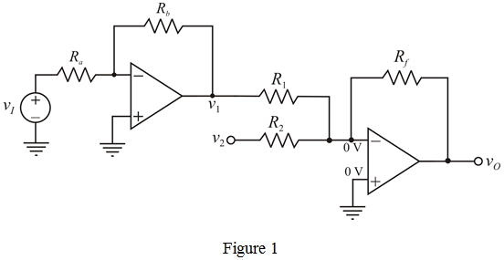
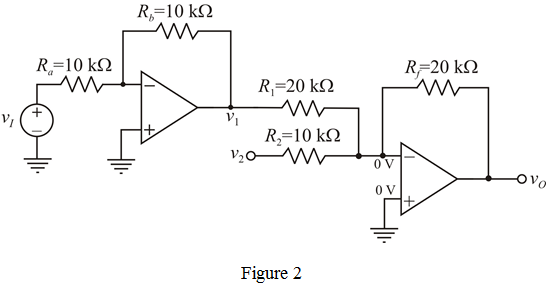

Equate equation (1) and equation (2).
…… (3)
And,
…… (4)
Assume, .
Recall equation (3).

Substitute  for
for  in the equation.
in the equation.
Recall equation (4).
Substitute  for
for  in the equation.
in the equation.
The output signal is,
Take and
The output voltage is,
…… (1)
One inverting amplifier and one two-input summing amplifier are required to meet the output voltage expression in equation (1).
The circuit is shown in Figure 1.

Assume and .
Apply Kirchhoff’s current law at inverting terminal of the op-amp 1.
Apply Kirchhoff’s current law at inverting terminal of op-amp 2.
…… (2)
Equate equation (1) and equation (2).
…… (3)
And,
…… (4)
Assume, .
Recall equation (3).
Substitute for in the equation.
Recall equation (4).
Substitute for in the equation.

Recall equation (2).
Substitute  for
for  ,
,  for
for  , and
, and  for
for  in the equation.
in the equation.
Substitute for  and
and  for in the equation.
for in the equation.
The output voltage waveform is shown in Figure 3.